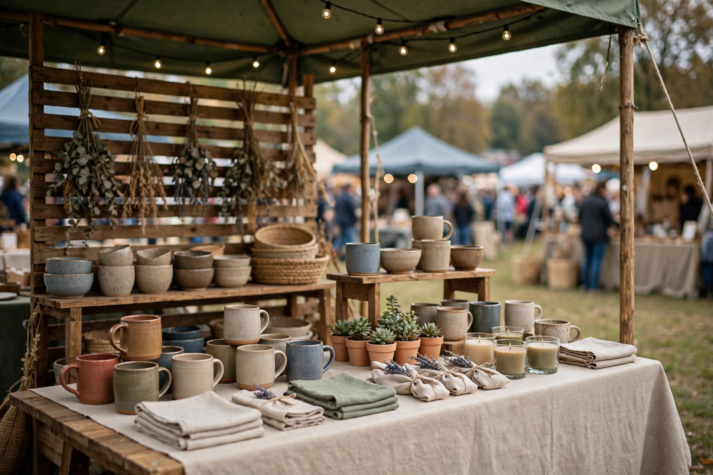

What Local Links Are and Why They Help
A link is simply a clickable connection from one website to yours. When a respected local website links to your business, it can send interested visitors to your site and signal to search engines that your business is part of the local community. This is different from paid links or bulk link schemes, which can harm your reputation and your search performance. Honest local links grow slowly, but they are safer, more believable, and more useful over the long term for a small business.
Local links work best when they make sense to a real person. A news story about your shop, a listing on an event page, or a mention by a local organisation tells a clear story: this business is active, known, and involved locally. Search engines value that kind of natural connection. More importantly, real people may click the link because they are already interested in the event or story. Focus on links that a customer would find helpful, not links that exist only to manipulate rankings, and your off-page work will stay on safe ground.

Get Involved in Things Worth Reporting
Local news and community sites write about real activities, not about businesses asking for links. To earn coverage, take part in something genuinely useful or interesting. This could include sponsoring a local school event, supporting a charity activity, hosting a free workshop, opening a new shop, or organising a community clean-up. Choose activities that fit your business and your values, and that you would be proud to be part of even if no link resulted from them at all.
When you plan an activity, think about the story it tells. What problem does it solve, who does it help, and why would local readers care? A clear, simple story is easier for a journalist or organiser to share. Prepare basic facts in advance: what is happening, when and where, who is involved, and how people can take part or learn more. Keep your information accurate and modest, avoid exaggerated claims, and make it easy for someone to contact you for details. Good preparation increases the chance of fair, accurate coverage.
Work With Local Journalists and Organisers Respectfully
Building relationships with local journalists, bloggers, and event organisers takes patience and respect. Start by learning what they cover and how they prefer to be contacted. Read their recent work, follow their publication if relevant, and only approach them when you have something genuinely relevant to their audience. A short, polite message explaining your event or story, with clear facts and a way to contact you, is far more effective than a long promotional message sent to many people at once.
Do not pressure journalists for a link, and do not offer payment in exchange for coverage that is presented as news. If a publication offers a clearly marked paid placement, consider it separately and honestly, but never confuse paid promotion with earned news. When you are featured, thank the writer or organiser politely, share the story through your own channels with credit, and keep the relationship warm for the future. Respectful, long-term relationships lead to more opportunities than a single pushy request ever will, and they protect your reputation.
- Join or support a genuine local event or cause
- Prepare clear facts: what, when, where, and who
- Contact only publications that cover your topic
- Thank organisers and share coverage with credit
Make Your Event Page Easy to Link To
When you take part in an event, make it easy for others to link to you correctly. Your website should have a clear page about your business, with your real name, location, services, and contact details. If you are hosting an event, a simple event page with the date, place, purpose, and contact information helps organisers and journalists link to the right page. Avoid confusing page names, outdated details, or pages that are hard to find, because these reduce the chance that someone will link to you at all.
Also check that your business information is consistent wherever it appears. Your business name, address, and phone number should match across your website, your Google profile, and event listings. Inconsistency can confuse both visitors and search engines. Before an event, double-check your details and fix any errors. After the event, update your page with a short, honest summary and photos, with permission, so the page remains useful. A well-kept page makes future coverage easier and gives every link a worthwhile destination for visitors.
Use Community Work, Not Shortcuts, to Build Links
Some businesses are tempted by shortcuts, such as buying large numbers of links, joining link schemes, or posting the same promotional comment on many sites. These methods may look fast, but they often create low-quality links that do not help real customers and can damage trust with search engines. A link that no real person would click, on a page that has nothing to do with your business, is rarely worth having. It is better to earn a small number of relevant local links than to collect many irrelevant ones that add no value.
Community work offers a better path. Volunteering, supporting local education, helping a local team, or sharing useful knowledge at a workshop can all lead to natural mentions over time. These activities also strengthen your local reputation in ways that go beyond search rankings. Customers who see your business supporting their community are more likely to trust you and recommend you. Treat link building as a side benefit of genuine involvement, not as the only reason for it, and the links you earn will be both safer and more meaningful.

A Practical Plan for the Next Few Months
Start small and stay consistent. Choose one local activity in the next month that fits your business, and prepare clear information about it. Contact one or two relevant local publications or organisers with a short, respectful message. Whether or not you receive coverage, attend the activity, take honest photos with permission, and share a simple summary on your own website and social pages. This alone builds useful content and local visibility, even before any external link appears.
Repeat this pattern over the following months, learning what works for your area and your audience. Keep a simple record of activities, contacts, and any coverage you receive, so you can follow up politely and avoid repeating the same request. Zaheer Seo Expert is based in Layyah, at Layyah - Rajan Shah Road, Rana Nagar, Chak 116 TDA, Layyah, Punjab, Pakistan, and is open 24 hours. You can contact Zaheer Seo Expert on 0327 7350830 or by email at seozaheer14@gmail.com. Earn links by being genuinely useful locally, and both your community and your search presence will benefit over time.
Frequently Asked Questions
What is a good local link for a small business?
A good local link comes from a relevant local news site, event page, or community organisation, and leads real visitors to a useful page on your site.
Should I pay for links to improve rankings?
Avoid buying links or joining link schemes, because low-quality links can harm trust and rankings, while honest local links are safer and more valuable.
How do I approach a local journalist?
Send a short, polite message with clear facts about a genuinely relevant story or event, and only contact publications that cover your topic.
How long does it take to earn local links?
It usually takes time and repeated community involvement, so focus on steady, genuine activities rather than expecting quick results from one event.
Want More Customers From Google?
Call 0327 7350830 or email seozaheer14@gmail.com. Zaheer Seo Expert, Layyah - Rajan Shah Road, Rana Nagar, Chak 116 TDA, Pakistan. Open 24 hours.
Get Your SEO Strategy →